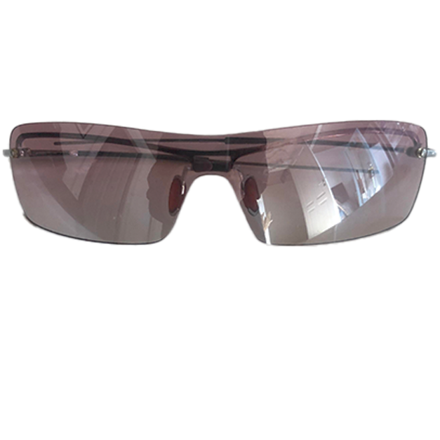
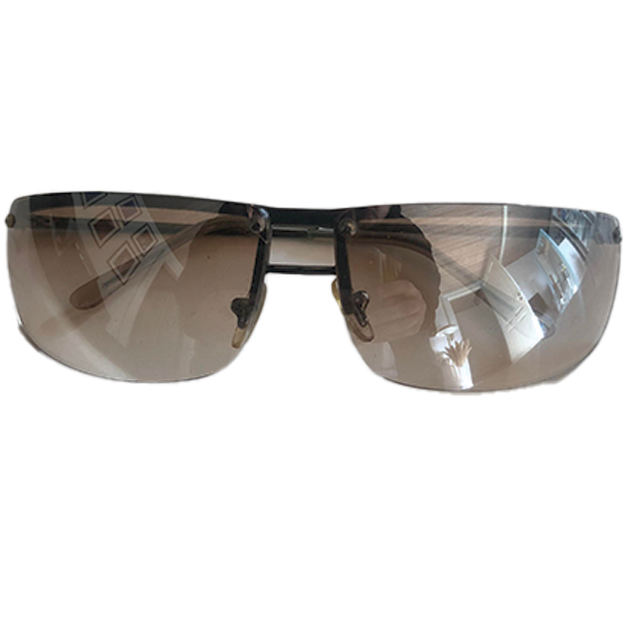

Sådan finder du solbriller på budget
Til dig der gerne vil se godt ud uden at bruge en formue. Gør nogle gode fund i genbrug.
Mange af de dyre og store brands er begyndt at lave solbriller i en Y2K-style. Men er der ikke lige plads til
et par prada-solbriller i dit budget så læs med her.
For at finde gode Y2K solbriller på budget har du brug for følgende:
- Tålmodighed
- Tid
- Nogle gode genbrugsbutikker
- En god throwback RnB sang i ørene
Nu er du så klar til at tage på jagt i en masse genbrugsbutikker. Det er ikke altid at man finder noget godt i en genbrugsbutik - derfor skal du væbne dig med tålmodighed. Det er også vigtigt, at du bruger tid og er omhyggelig, da du på den måde har større chance for at finde noget "guld".
God Genbrugsjagt!

